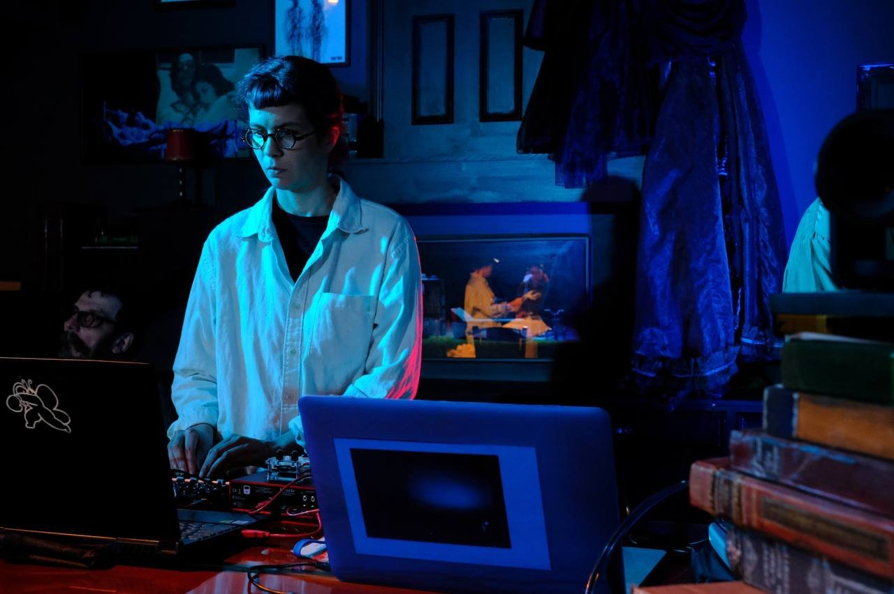
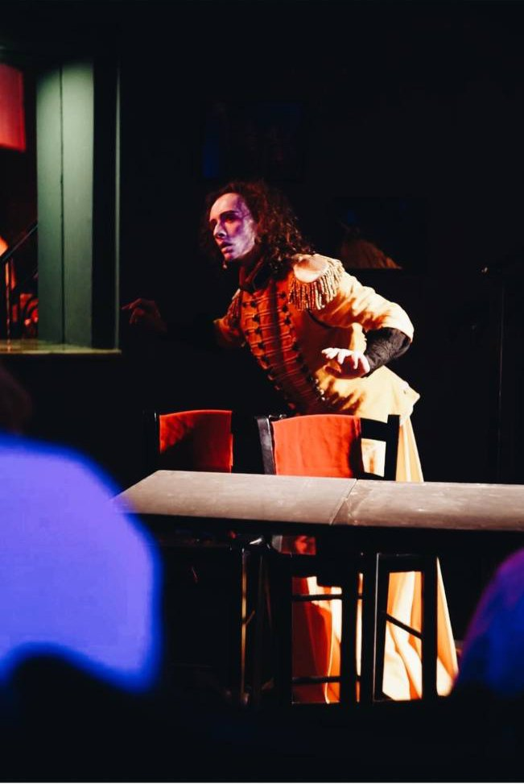
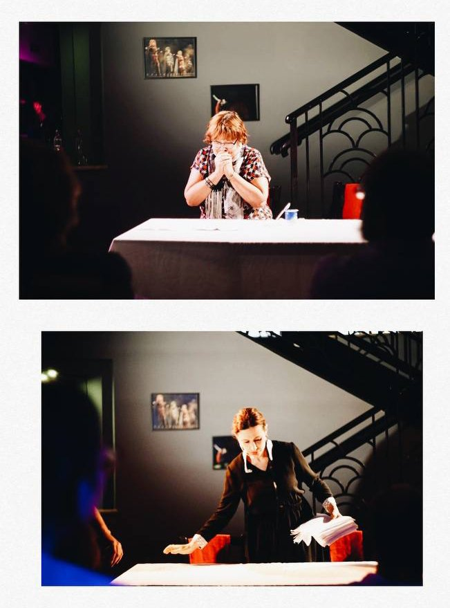

Logline & Concept
A provocative anti-war play-reading staged as a conceptual performance. The text, written by an anonymous group of contemporary Russian playwrights working underground, is a surreal parable about war, conformity, resistance, and the loss of time. Although presented in the format of a "theatrical reading," in the hands of its director it became a fully realized production that confronted existential questions: What do we do when the world has gone insane? How do we preserve ourselves when time itself has stopped?
Creative Team
- Director: Nick Dreyden
- Playwrights: Anonymous (Russia, 2022)
- Festival: International Jaffa Fest 2022 (Tel Aviv)
- Venue: Gesher Theatre (Tel Aviv)
Premiere
June 17, 2022 — Jaffa Fest, Gesher Theatre stage.
Directorial & Multimedia Concept
Despite the minimalist framework of a staged reading, Nick Dreyden presented Dead Time as a fully conceptual production. The stage was bare — just actors with scripts, a few chairs, and some musical instruments — yet through precise blocking and dramatic lighting, the performance acquired intense theatricality. At key moments, actors stepped away from their music stands and physically enacted scenes: the "dead time" described in the text suddenly sprang to life before the audience's eyes. Live music underscored the action, and subtle multimedia touches (shadows, projections, and ambient soundscapes) deepened the sense of suspended time. As the Jaffa Fest press release noted, Dreyden's approach "with minimalist design, original mise-en-scène, emotionally charged performances, and live music, elevated the reading beyond the traditional format."
Reception
Festival audiences described it as "a modest reading that turned into an emotional explosion." Many remarked that even without elaborate sets, the show was devastating: "like sitting on a powder keg… the silence in the hall was deafening." Theatre bloggers emphasized that the director found powerful artistic devices to excavate the text's essence — grappling with "the existential questions of war, submission and resistance, time and loss."
Gallery


